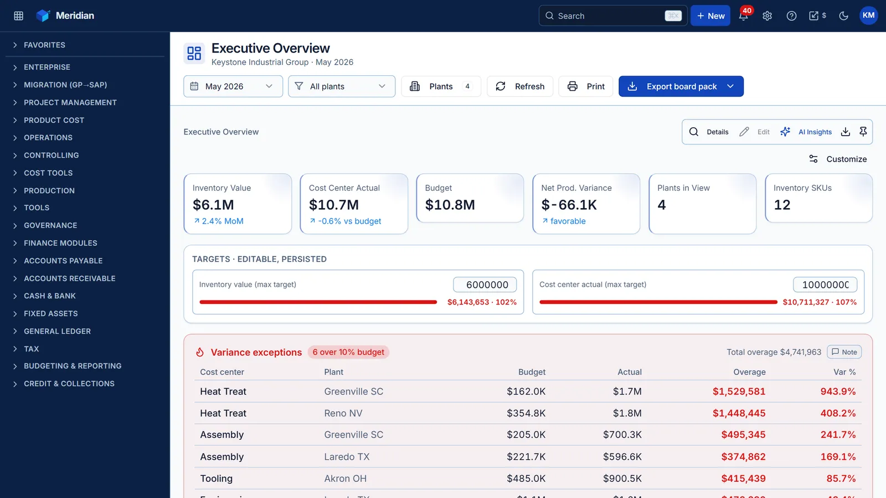
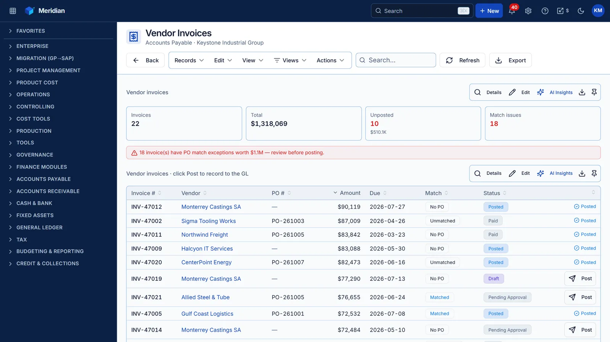
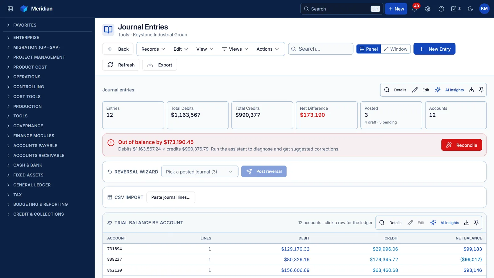
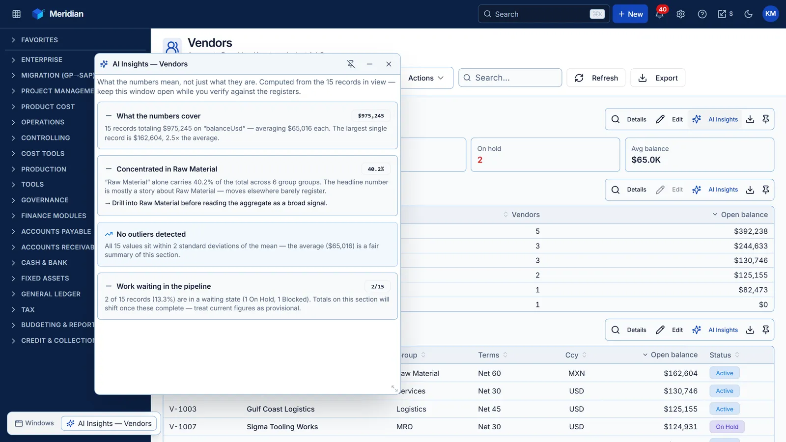
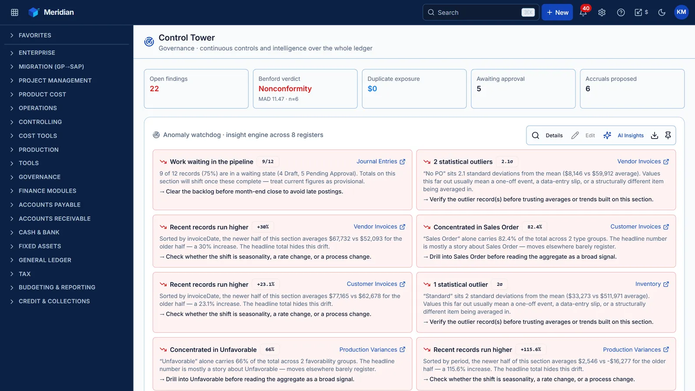
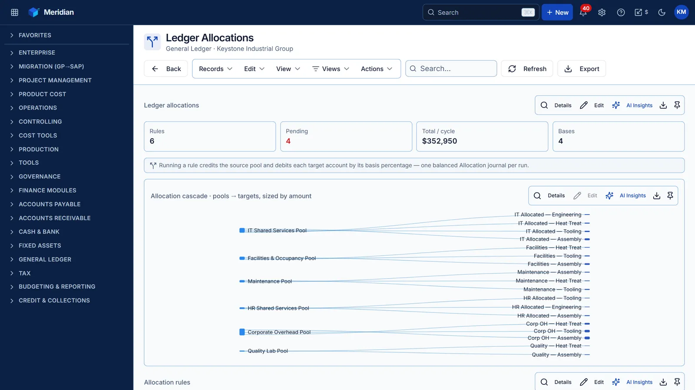

KM² · FLAGSHIP BUILD
Meridian
Beyond D365.
The enterprise cost-accounting platform that out-grew the system it emulated. 71 registers, a governed double-entry ledger, and AI on every screen — in one Node process.

Why it exists
Microsoft Dynamics 365 Finance & Operations is the system most manufacturers run their books on — and the system most finance teams wish they could change. Meridian started as a faithful D365 cost-accounting workspace and kept going: 32 features across eight enhancement waves, a governed GL posting engine, continuous-controls monitoring, and a local AI insight layer no ERP ships with. Built end-to-end by one person, as one TypeScript codebase.
SCENE 1 / THE PLATFORM
The whole ledger. One workspace.
AP, AR, General Ledger, Fixed Assets, Cash & Bank, Tax, Budgeting, Credit & Collections, plus full manufacturing cost accounting — every register a working page with filters, saved views, conditional formatting, watchlists, and export.

SCENE 2 / THE ENGINE
Every journal balances. Always.
Every money-moving action — 22 transaction types across every module — funnels through one governed posting engine: balanced debits and credits, fiscal-period guards, multi-currency with FX, dimension validation, and a $50k approval threshold with segregation of duties.

SCENE 3 / THE AI LAYER
AI on every section.
~160 command bars — one above every KPI strip, chart, and table — each opening a floating AI Insights window: a deterministic local engine that explains scale, concentration, outliers, pipeline health, and time drift in plain English. Offline. Instant. On every screen.

SCENE 4 / GOVERNANCE
The Control Tower.
Continuous controls a Big-4 auditor would recognize: Benford's-Law screening of posted amounts, duplicate-payment detection with dollars-at-risk, a journal approval queue with segregation of duties, and a data-quality scoreboard across ten registers.

SCENE 5 / THE CLOSE
Close with confidence.
Fiscal-period control, auto-reversing accruals, allocation cascades you can see, year-end close to retained earnings, and financial statements rendered live from the trial balance. Bank statements import and auto-match; journal CSVs post through the full validation stack.

SEE IT IN MOTION
Three workflows, start to post.
Not a slideshow — real transactions recorded live in the app: a balanced journal posted to the ledger, an inventory reserve routed for approval, and a customer payment applied and posted.
Create & post a journal entry
The governed composer — balanced double-entry, period-checked and dimension-validated before it posts to the GL.
Book an inventory reserve
Reserve slow-moving stock against obsolescence, document the reason, and route it to the disposition queue for approval.
Apply a customer payment
Cash Application matches receipts to open invoices — one click posts Dr Cash / Cr A/R and marks the invoice paid.
Everything inside.
Nineteen modules. Every one a working set of pages, not a menu stub.
What separates it.
The parts no ERP demo — and few ERPs — ship with.
Tech specs
Built by one person.
Run by one process.
Meridian is the flagship of the KM² build portfolio — proof that modern finance tooling doesn't need a vendor.
Get in touch